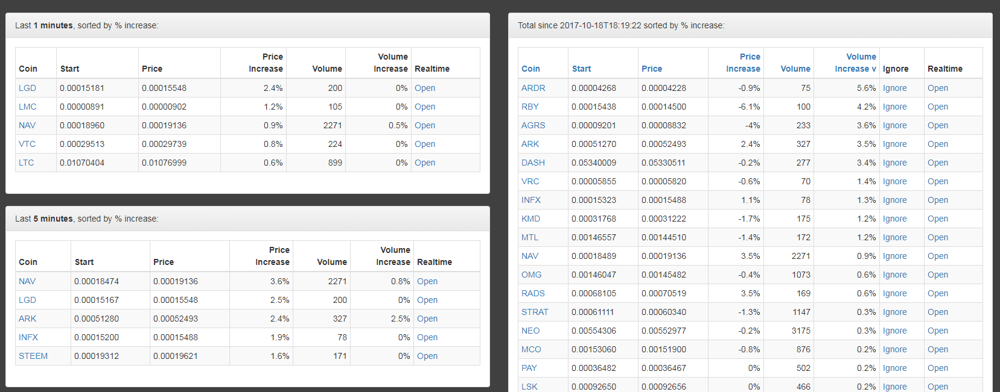

Overview
On the left side beneath the donations you will see timeframes starting from 1 minute, 5 minutes, 15 minutes, 30 minutes, 60 minutes all the way up to 240 minutes.
Each table displays the coins who gain the most in price. At the end of these columns you will find a "Real-time" column.
Since the CryptoTracky Overview collects the data locally and builds up the contents of the overview page it is key that you do not refresh or reload the page during usage or you will lose all the information that is gathered since the last time you’ve opened the page.
So to see information about a CryptoCurrency performing over a time span of 60 minutes or 240 minutes, it is essential the overview page is open and has not been refreshed for the same amount of time.
Again it is possible to open the real-time price per second page of each coin on the column on the far right. The column of the far left which states "Coin” will bring you directly to the designated page on the Bittrex.com Exchange.
On the right side of the overview page you will find an entire list of CryptoCurrency that is changing price or volume.
The columns over here can be sorted by clicking on the column header. This way they can be easily sorted on "Price increase”, total "Volume” or "Volume Increase”.
